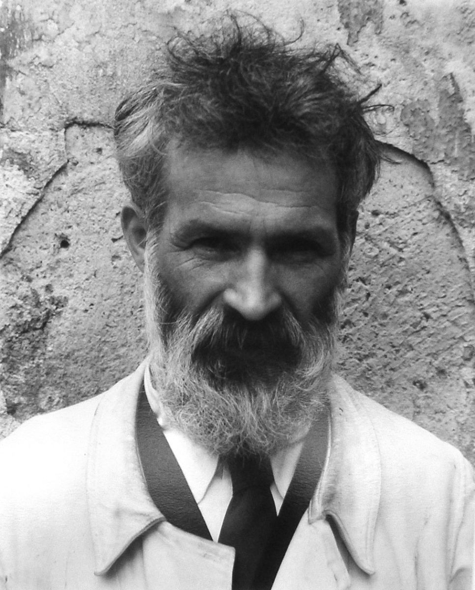

Studiu de caz - Cultura română - cultură europeană
În studiul de caz ”Cultura română - cultură europeană” îți oferim informații despre Constantin Brâncuși, una dintre cele mai marcante personalități culturale și artistice pe care țara noastră le-a oferit. Informațiile despre Constantin Brâncuși pe care ți le vom furniza se referă în special la personalitatea artistică a acestuia, studiile sale, modernitatea operei sale care a și alineat cultura română alaturi de cultura europeană.
Acest studiu de caz, ”Cultura română - cultură europeană” face parte din programa pentru simularea examenului de Bacalaureat pentru clasa a XI-a. Citește cu atenție și află mai multe informații despre Constantin Brâncuși și impactul său asupra culturii românești și a celei europene.
Cultura română a beneficiat de o evoluție aparte de-a lungul secolelor, datorită particularităților celor trei provincii românești și a poziției istorico-geografice, care a plasat țara noastră la întretăierea drumurilor dintre Occident și Orient. Cultura românească a reușit în acest context să își dezvolte o perspectivă proprie și o capacitate deosebită de sinteză a valorilor în căutarea și urmarea destinului său european, reușind în secolul al XX-lea să se integreze irevocabil în spațiul spiritualității europene.
Constantin Brâncuși - personalitate artistică europeană
Secolul al XX-lea a oferit Europei o multitudine de personalități culturale, în cele mai diverse domenii, constituind dovada integrării culturii românești în cadrul celei europene. Fără doar și poate, putem menționa aici nume precum: Tristan Tzara, Mircea Eliade, Eugen Ionescu, George Enescu, Constantin Brâncuși, exemplele putând continua. Ne vom opri însă atenția în cele ce urmează asupra marelui sculptor Constantin Brâncuși, cel care este apreciat de majoritatea criticilor de artă ca fiind unul dintre cei mai importanți sculptori ai secolului al XX-lea și, de asemenea, unul dintre cei mai mari artişti din toate timpurile, revoluționând limbajul plastic al sculpturii contemporane.

Constantin Brâncuși în anul 1922
{kind=link}
Constantin Brâncuşi a văzut lumina zilei pe 19 februarie 1876, în satul Hobița din județul Gorj. În timpul școlii primare lucra și ca ucenic în diverse prăvălii, într-una din zile făurind o vioară din resturile găsite. Astfel s-a luat hotărârea de a fi trimis la Școala de Arte și Meserii din Craiova, din 1894 până în 1898, aici fiind inițiat în arta desenului și a sculpturii în lemn. După absolvirea Școlii de Arte și Meserii de la Craiova, se va înscrie la Școala Națională de Arte Frumoase din București, ale cărei cursuri le urmează în perioada 1898-1902.
Beneficiază aici de îndrumarea unor mari profesori ai vremii precum Vladimir Hegel, Ion Georgescu sau Dimitrie Gerota. Încă din timpul studenției are o prolifică activitate, fiind deseori premiat pentru lucrările sale. După terminarea Școlii de Belle-Arte de la București va primi, în 1903, prima sa comandă oficială – realizarea bustului lui Carol Davila; această lucrare a fost instalată la Spitalul Militar din București, fiind și singurul monument public al lui Brâncuși din București (neapreciat la momentul respectiv la adevărata sa valoare).
Studiile la Paris

Atelierul lui Brâncuși din Paris (1920)
{kind=link}
În anul 1906 trei dintre lucrările sale sunt alese pentru a fi expuse la Salonul de toamnă de la Paris. Este primit de cel mai mare sculptor francez al vremii, Auguste Rodin, să lucreze în atelierul acestuia. Va renunța însă la această ofertă, afirmând cu convingere că la umbra marilor copaci nu crește nimic („Rien ne pousse à l’ombre des grands arbres”).
Începe să primească tot mai multe comenzi din țară și concepe astfel primele sale lucrări importante: Somnul, Rugăciunea, Cumințenia pământului.
Opera lui Brâncuși - operă europeană
“Arta nu face decât să înceapă continuu.” - Constantin Brâncuși
Anii 1937-1938 sunt anii de grație în care marele sculptor reușește să finalizeze ansamblul monumental de la Târgu Jiu: trilogia care cuprinde Masa tăcerii, Poarta sărutului şi Coloana infinitului.
Atelierul său se afla la Paris, de unde călătorea adesea în țară sau în străinătate, cu prilejul numeroaselor expoziții din întreaga lume: Statele Unite ale Americii, Australia, Anglia, Franța, Olanda, Elveția. În atelierul de la Paris va lucra până la moartea sa, în 16 martie 1957. Atelierul și lucrările lui Brâncuși vor fi lăsate prin testament Muzeului de Artă Modernă din Paris.
„Arta ar trebui să fie numai bucurie!… De aceea, nu există „artişti”, ci numai oameni care simt nevoia să lucreze, întru bucurie! Să cânte, asemenea păsărilor! - Constantin Brâncuși
Modernitatea operei lui Brâncuși
Modernitatea operei lui Brâncuși poate fi abordată din diverse perspective. Constantin Brâncuși a fost considerat un sculptor simbolist, corpurile reprezentate fiind reduse la liniile esențiale (eliminând detaliile de prisos) care sunt capabile să le integreze în ordinea Universului.
„Am șlefuit materia pentru a afla linia continuă. Și când am constatat că n-o pot afla, m-am oprit; parcă cineva nevăzut mi-a dat peste mâini” - Constantin Brâncuși.
Sursa inspirației sale trebuie căutată la origini, în spiritualitatea românească, în arta populară autohtonă, pe care a oferit-o astfel întregii lumi. Materialelor utilizate – marmura, bronzul, piatra, lemnul – le-a conferit o eleganță a formei de neegalat. Se remarcă la o analiză minuțioasă a operei sale folosirea unor motive care alcătuiesc esenţa lumii: zborul (simbol al căutării idealului și al desprinderii de pământesc), sfera (simbol al perfecţiunii), oul (simbol al genezei), inelul (simbol al unităţii), somnul etc.
„Eu am vrut să înalț totul dincolo de pământ. Eu am făcut piatra să cânte pentru Omenire. Sculpturile mele sunt chiar și pentru cei orbi. Ceea ce va dăruiesc eu este bucurie curată.”- Constantin Brâncuși.
Unele teme s-au bucurat de reluarea lor în mai multe variante, în aceeași căutare a desăvârșirii artistice și spirituale: Pasărea în văzduh și Pasărea măiastră (Măiastra); Sărutul și Poarta Sărutului etc.
„Aș vrea ca lucrările mele să se ridice în parcuri și grădini publice, să se joace copiii peste ele, cum s-ar fi jucat peste pietre și monumente născute din pământ, nimeni să nu știe ce sunt și cine le-a făcut - dar toată lumea să simtă necesitatea și prietenia lor, ca ceva ce face parte din sufletul Naturii.” - Constantin Brâncuși